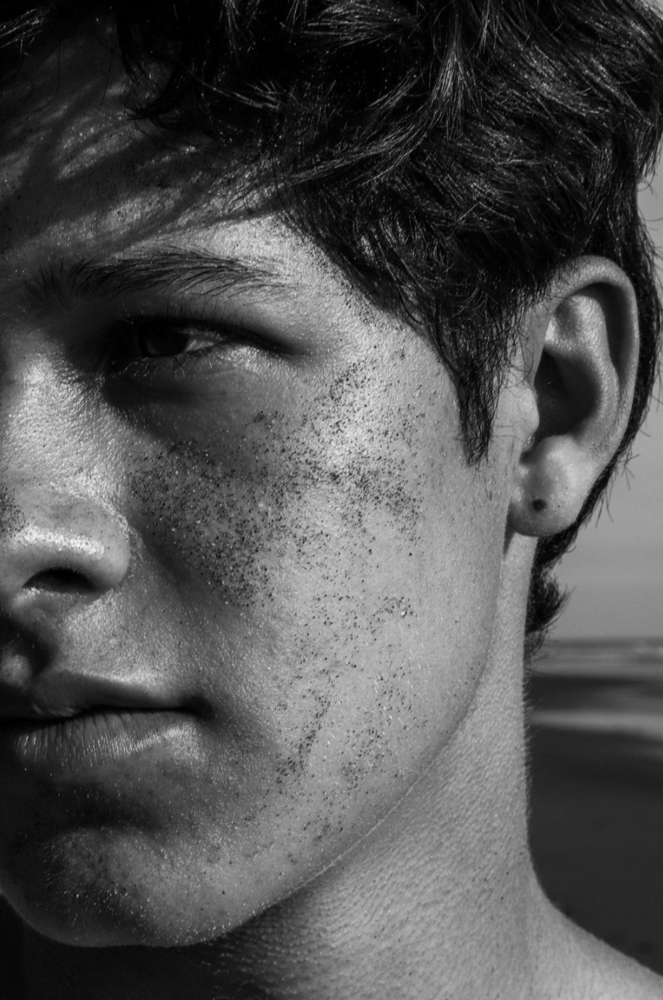

Mi nombre es Andrés Cedeño Charpentier, tengo 19 años y soy estudiante universitario. Actualmente estudio la carrera de Ingeniería en Sistemas de Computación en la universidad Fidélitas, pero a su vez tengo alrededor de 2 años de estar practicando la fotografía. Actualmente soy fotógrafo y videografo enfocado en la cobertura de eventos de dj’s. Cuento con una agencia de producción audiovisual llamada Vidit y además realizo trabajos de freelance de fotografía y video. Por otro lado, practico la fotografía como un hobby realizando fotografía de paisajes, retratos a amigos, naturaleza e incluso me gusta mucho desarrollar videos de estas experiencias con tomas de drone.